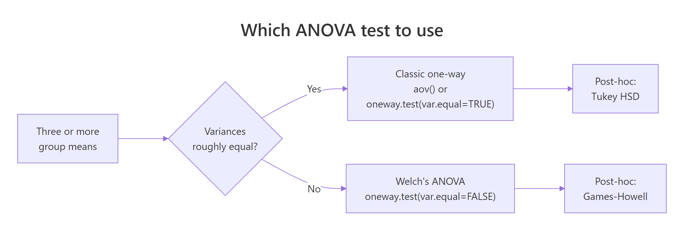

Welch's ANOVA in R: When Group Variances Are Unequal
Welch's ANOVA tests whether three or more group means differ without assuming equal variances across groups. Use it in place of the classic one-way ANOVA whenever Bartlett's or Levene's test flags heteroscedasticity, or simply use it by default. Its statistical power is nearly identical to the classic F-test when variances are equal, and it stays valid when they are not.
When should you use Welch's ANOVA instead of classic ANOVA?
The classic F-test assumes every group shares the same variance. When that assumption fails, the F-statistic is miscalibrated and the p-value is unreliable. Welch's ANOVA fixes this by weighting each group by its own variance and adjusting the degrees of freedom. Here is the one-line command that does it correctly in R, applied to simulated exam scores from three teaching methods where the three groups have deliberately unequal variances.
We build a dataset of 60 exam scores split across three teaching methods, give each group a different true standard deviation, then run Welch's ANOVA via oneway.test() with var.equal = FALSE.
Welch's ANOVA reports F = 4.87 on roughly 2 and 36.4 degrees of freedom, with p = 0.013. The numerator df is always groups - 1 = 2. The denominator df is fractional (36.44, not a whole number). That fractional value is the telltale sign of Welch's correction, which shrinks the effective df whenever groups have unequal variances. The p-value is below 0.05, so the three teaching methods produce statistically different mean scores.
For contrast, here is what the classic one-way F-test (equal-variance assumption) produces on the same data.
The classic F-statistic (3.85) is smaller and the denominator df is a clean 57 (n - groups = 60 - 3). The p-value also differs. With heteroscedastic data, these numbers cannot both be right. Welch's correction is the one you should trust here because the equal-variance assumption is violated, as we will verify in the next section.
Try it: Change the standard deviation of group B from 12 to 4 so all three groups have equal spread. Re-run Welch's ANOVA and note how the denominator df moves close to the classic value of 57.
Click to reveal solution
Explanation: When variances are equal, Welch's correction produces a denominator df that is essentially identical to the classic value. This is why using Welch's by default has almost no cost when assumptions hold, yet protects you when they fail.
How do you detect unequal variances in R?
You can spot unequal variances two ways. A quick visual check via boxplot is usually enough to show the story. A formal test, like Bartlett's or Levene's, gives you a p-value to report alongside the ANOVA. Start with group-wise summary statistics to see the spread numerically.
The variances are 15.5, 123, and 39.8, which differ by a factor of almost 8 between group A and group B. A common rule of thumb is that the ratio of largest to smallest variance should stay below 4 for the classic ANOVA to be trustworthy. This data blows past that threshold, so the equal-variance assumption is already suspect.
To confirm with a formal test, use Bartlett's test. It compares variances across groups and returns a p-value under the null hypothesis that all variances are equal.
The p-value is tiny (1.8e-05), so we reject the null of equal variances. This is a strong signal to drop the classic F-test and run Welch's instead. Bartlett's test is sensitive to non-normality though, so if your data has heavy tails, it can flag heteroscedasticity that isn't really there.
car::leveneTest(score ~ method, data = scores) or rstatix::levene_test(scores, score ~ method). Reach for Bartlett's only when you are confident your data is close to normal.Try it: Run Bartlett's test on the built-in iris dataset to see whether Sepal.Length has equal variance across the three Species.
Click to reveal solution
Explanation: Sepal.Length has unequal variances across the three iris species (p = 0.0003), so a Welch's ANOVA is the safer choice for comparing species means on that variable.
How do you run Welch's ANOVA in R?
The function is oneway.test() from base R. The formula interface is the same as aov(), and the single argument that switches on Welch's correction is var.equal = FALSE. Here is the command again, this time reading the output piece by piece.
Three numbers matter in the output. The numerator df is groups - 1 = 2, the same as in classic ANOVA. The denominator df is 36.44, not the classic n - groups = 57, because Welch applies a Satterthwaite correction that shrinks the effective df as variances diverge. The F-statistic (4.87) and p-value (0.013) reject the null that all three teaching-method means are equal.
var.equal argument. var.equal = TRUE produces the same F and p-value you would get from summary(aov(score ~ method, data = scores)). var.equal = FALSE applies Welch's variance-weighted F and the Satterthwaite df adjustment. Same formula, same data, different assumption.The Welch-Satterthwaite correction has a compact formula. If you are not interested in the math, skip to the next section, the practical code above is all you need.
$$\text{df}_{\text{denom}} = \frac{\left(\sum_{i=1}^{k} w_i\right)^2}{\sum_{i=1}^{k} \frac{w_i^2}{n_i - 1}}, \quad w_i = \frac{n_i}{s_i^2}$$
Where:
- $k$ = number of groups
- $n_i$ = sample size of group $i$
- $s_i^2$ = sample variance of group $i$
- $w_i$ = the weight R assigns to group $i$ (large when the group is big and low-variance)
The denominator df is a weighted harmonic-like mean that penalizes groups with small $n$ or high variance. That is why it ends up fractional.
Try it: Run Welch's ANOVA on the built-in airquality dataset, comparing Ozone across Month. Ozone concentrations differ a lot across summer months and have very different variances.
Click to reveal solution
Explanation: Ozone means differ significantly across months (p < 0.001). The denominator df of 62.35 is fractional, reflecting the uneven spread across months (July and August have much higher variance than May).
Which post-hoc test follows Welch's ANOVA?
Welch's ANOVA tells you that the group means differ, but not which pairs differ. For that you run a post-hoc test. The standard Tukey HSD post-hoc assumes equal variances, so it is the wrong tool here. The correct choice is the Games-Howell test, which uses Welch-type standard errors and pair-specific degrees of freedom.
The quickest WebR-safe implementation uses base R's pairwise.t.test() with pool.sd = FALSE, which gives you Welch-style pairwise t-tests. Apply a Bonferroni adjustment to control the family-wise error rate.
The pairwise table shows that A vs B (p = 0.010) and A vs C (p = 0.028) differ significantly, but B vs C (p = 0.333) do not. So method A produces lower mean scores than the other two, but B and C are statistically indistinguishable. That is the kind of granular conclusion an omnibus ANOVA alone cannot give you.
pairwise.t.test(pool.sd=FALSE) is a close but not exact Games-Howell. Games-Howell uses the Studentized-range (Tukey's Q) distribution, whereas pairwise.t.test uses the t distribution. In practice they agree for most datasets, and the base-R version runs anywhere. For a formal Games-Howell (recommended when reporting results in a paper), use rstatix::games_howell_test().Here is the rstatix version for completeness. It returns a tidy tibble with confidence intervals, which makes reporting easier.
Notice that the conclusions match: A vs B is highly significant, A vs C is significant, B vs C is not. The rstatix output adds the mean-difference estimates and 95% confidence intervals, which are often more informative than a raw p-value for a report or paper.
Try it: Run pairwise.t.test with pool.sd = FALSE on the three teaching methods, but change p.adjust.method to "holm". Compare the p-values to the Bonferroni version above.
Click to reveal solution
Explanation: Holm's method is a step-down Bonferroni that is always at least as powerful as plain Bonferroni while still controlling the family-wise error rate. A vs C drops from 0.028 (Bonferroni) to 0.019 (Holm), but the overall conclusion is unchanged.
How do you visualize and report Welch's ANOVA?
A boxplot with jittered points makes the variance story obvious at a glance. Pair it with the numeric test results in the figure caption or legend to produce a publication-ready display.
The boxplot reveals what the summary stats already told us numerically. Method B has a much wider box than methods A or C, which is the heteroscedasticity that made Welch's ANOVA the right choice in the first place. Pair the plot with an APA-style reporting sentence.
F(2, 36.44) = 4.87, p = .013, not F(2, 36) = 4.87. Rounding the df silently changes the reported precision of your test. Keep two decimals on the Welch denominator df.To automate the APA sentence, grab the fields from welch_fit and print with sprintf.
welch_fit$parameter returns the two degrees of freedom, welch_fit$statistic is the F, and welch_fit$p.value is the p-value. Wrapping them in sprintf gives you a reusable reporting helper for any Welch's ANOVA fit.
Try it: Run a Welch's ANOVA on iris comparing Sepal.Length across Species, then produce the APA reporting sentence from the fit.
Click to reveal solution
Explanation: The iris species differ dramatically on Sepal.Length, so the F is very large and the p-value is effectively zero. The fractional 92.21 denominator df reflects Welch's correction for the unequal variances we confirmed earlier with Bartlett's test.
Practice Exercises
Exercise 1: Welch's ANOVA on airquality
Using the built-in airquality dataset, compare Ozone across Month. Generate group summary stats, check variance equality with Bartlett's test, run Welch's ANOVA, and save the resulting fit to my_air_fit. Report which months differ most.
Click to reveal solution
Explanation: Bartlett's test confirms unequal variances across months. Welch's ANOVA rejects the null of equal means (p < 0.001). A pairwise follow-up with pool.sd = FALSE would show that July and August have higher mean ozone than May.
Exercise 2: Wrap it in a helper function
Write a function run_welch_suite(data, formula) that takes a data frame and a formula, then prints (1) the per-group summary stats, (2) Bartlett's test p-value, and (3) the Welch's ANOVA F and p-value. Test it on mtcars mpg by cyl.
Click to reveal solution
Explanation: The helper encapsulates the full Welch pipeline in one call. Bartlett flags heteroscedasticity (p = 0.012), Welch's ANOVA strongly rejects equal mpg means across cylinder counts (F = 31.62).
Exercise 3: Compare classic vs Welch's under two scenarios
Simulate two datasets. Scenario 1 has equal variances across three groups; Scenario 2 has unequal variances. In each scenario, fit both classic and Welch's ANOVA and compare their F-statistics and p-values. Save the four p-values to my_pvals. Explain what you observe.
Click to reveal solution
Explanation: When variances are equal (Scenario 1), both tests agree almost exactly. When variances differ (Scenario 2), the classic and Welch's p-values diverge. The classic test is over-confident because it assumes a pooled variance that does not exist, while Welch's correctly reflects the extra uncertainty in group B's noisy measurements.
Complete Example
Here is an end-to-end Welch's ANOVA workflow on the built-in iris dataset, comparing Sepal.Length across the three species. This mirrors how you would use the technique in real analysis: check, fit, follow up, visualize, report.
The workflow reads top to bottom: confirm variances differ, run Welch's ANOVA, follow up with Welch-style pairwise tests, and report. All three species differ significantly from each other in Sepal.Length, with the largest gap between setosa and virginica.
Summary
| Step | What to run | Why | Code | |
|---|---|---|---|---|
| 1 | Group summary stats | See if variances differ | `group_by() \ | > summarise(sd, var)` |
| 2 | Variance equality test | Formal check | bartlett.test(y ~ g) or car::leveneTest |
|
| 3 | Welch's ANOVA | Valid under unequal variance | oneway.test(y ~ g, var.equal = FALSE) |
|
| 4 | Post-hoc | Which pairs differ | pairwise.t.test(y, g, pool.sd = FALSE) |
|
| 5 | Visualize | Show the spread | ggplot + geom_boxplot + geom_jitter |
|
| 6 | Report | APA-style sentence | sprintf with $parameter, $statistic, $p.value |

Figure 1: A decision tree for choosing between classic ANOVA and Welch's ANOVA, along with the appropriate post-hoc test for each.
References
- Welch, B.L. (1951). On the comparison of several mean values. Biometrika, 38(3/4), 330-336. The original paper introducing the variance-weighted F statistic and Satterthwaite df correction.
- R Core Team.
stats::oneway.testdocumentation. Link - Games, P.A. & Howell, J.F. (1976). Pairwise multiple comparison procedures with unequal N's and/or variances. Journal of Educational Statistics, 1(2), 113-125.
- Delacre, M., Lakens, D., & Leys, C. (2017). Why Psychologists Should by Default Use Welch's t-test Instead of Student's t-test. International Review of Social Psychology, 30(1), 92-101. Link
- Kassambara, A.
rstatix::welch_anova_testreference. Link - Kassambara, A.
rstatix::games_howell_testreference. Link - NIST/SEMATECH. e-Handbook of Statistical Methods, Section 7.4.7: Welch's procedure. Link
Continue Learning
- One-Way ANOVA in R, the parent tutorial covering classic
aov(), Levene's test, and Tukey HSD for the equal-variance case. - Post-Hoc Tests After ANOVA, a deeper dive on pairwise comparison methods including Tukey HSD, Bonferroni, and Holm corrections.
- Two-Way ANOVA in R, extending the ANOVA framework to two factors with interaction terms.